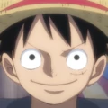
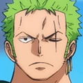
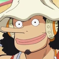
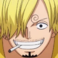
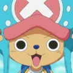
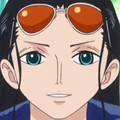
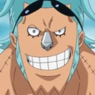
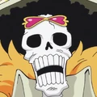
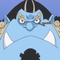

Mugiwaras/Sombreo de Pajas
Información sobre los Sombrero de Pajas
Los Piratas de Sombrero de Paja es una banda de piratas originaria del East Blue, pero tiene miembros de diferentes partes del mundo. Ellos son el foco y los principales protagonistas de la trama del manga y el anime de One Piece, siendo capitaneados por el protagonista principal de la serie, Monkey D. Luffy. Se les conoce como los de «Sombrero de Paja», por el característico sombrero de su capitán.Actualmente, los Piratas de Sombrero de Paja están constituidos por diez miembros cuyas recompensas suman un total de 3.161.000.100$.
Miembros de la tripulación
- Monkey D.Luffy
- Roronoa Zoro
- Nami
- Ussop
- Sanji
- Chopper
- Nico Robin
- Franky
- Brook
- Jimbei
Profesión y capacidades
| Profesión | Capacidades | Apodo | |
|---|---|---|---|
| Monkey D. Luffy | Capitán |
|
Sombrero de paja "Mugiwara" |
| Roronoa Zoro | Mano derecha |
|
Cazador de piratas |
| Nami | Navegante |
|
Gata ladrona |
| Sanji | Cocinero |
|
Pierna negra |
| Ussop | Francotirador |
|
Sogeking, Rey de los francotiradores o DIOS |
| Chopper | Medico |
|
Amante del algodón de azúcar |
| Nico Robin | Arqueóloga |
|
Niña demonio |
| Franky | Carpintero Naval |
|
EL cyborg |
| Brook | Músico |
|
Soul King |
| Jimbei | Timonel |
|
EL caballero del mar |